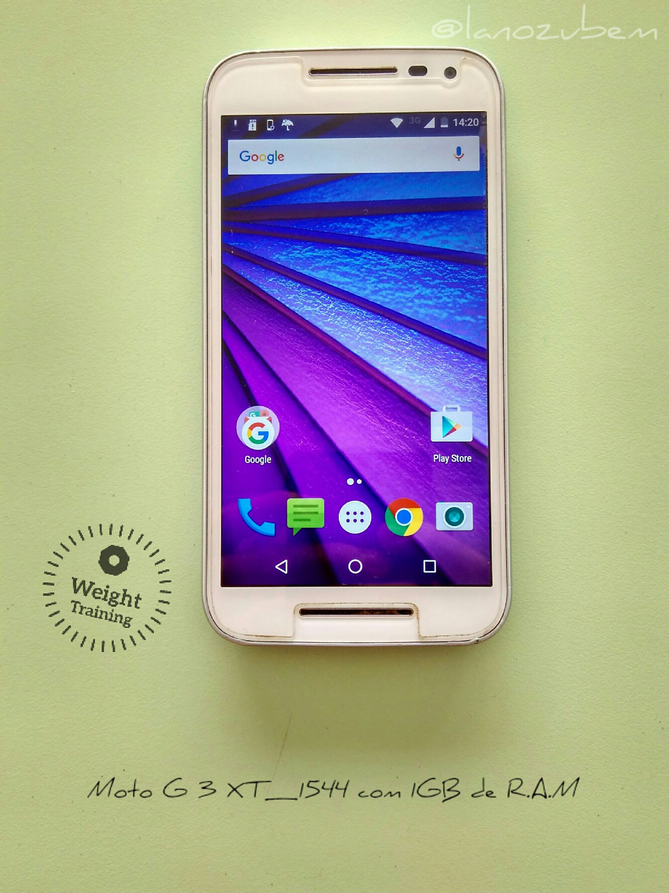
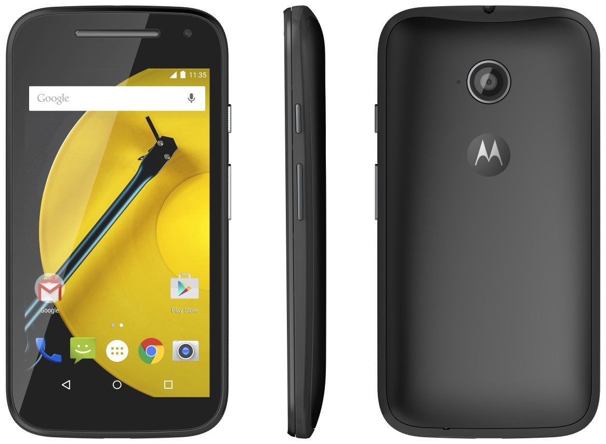

Remover aquele login esquecido nunca foi tão fácil
Para agilizar prescione F3 do seu teclado e ensira o modelo.
-
Remover a conta Google: Moto G XT1543

Retirar conta Google | Bypass | remover Gmail -
Remover a conta Google: Moto G XT1544
Retirar conta Google | Bypass | remover Gmail -
Remover a conta Google: Moto E2 XT1514

Retirar conta Google | Bypass | remover Gmail -
Remover conta Google: Galaxy J1 Ace J111F

Retirar conta Google | Bypass | remover Gmail -
Remover conta Google: Galaxy J1 mine J100M

Retirar conta Google | Bypass | remover Gmail -
Remover a conta Google: Gran Prime G531BT

Retirar conta Google | Bypass | remover Gmail -
Remover a conta Google: Gran Prime G531M

Retirar conta Google | Bypass | remover Gmail -
Remover a conta Google: Galaxy ON7 G600FY

Retirar conta Google | Bypass | remover Gmail -
Remover a conta Google: Galaxy J1 mine J105B

Retirar conta Google | Bypass | remover Gmail -
Remover a conta Google: Samsung Galaxy J7 J700M

Retirar conta Google | Bypass | remover Gmail -
Remover conta Google: Galaxy J7 PRIME SM-G610M

Retirar conta Google | Bypass | remover Gmail -
Remover conta Google: Galaxy J2 Prime G532MT

Retirar conta Google | Bypass | remover Gmail -
Remover conta Google: Galaxy A3 2016 A310M

Retirar conta Google | Bypass | remover Gmail -
Remover a conta Google: Galaxy J2 J200bt

Retirar conta Google | Bypass | remover Gmail -
Remover a conta Google: BLU Advance L2 A030L

Retirar conta Google | Bypass | remover Gmail -
Remover a conta Google: Gran Prime G530BT

Retirar conta Google | Bypass | remover Gmail -
Remover a conta Google: Lg k10 k430TV

Retirar conta Google | Bypass | remover Gmail -
Remover a conta Google: Galaxy J2 J200M

Retirar conta Google | Bypass | remover Gmail -
Remover a conta Google: Galaxy J1 2016 J120H

Retirar conta Google | Bypass | remover Gmail -
Remover a conta Google: Lg K8 K350ds

Retirar conta Google | Bypass | remover Gmail -
Remover a conta Google: Galaxy J3 J320M

Retirar conta Google | Bypass | remover Gmail -
Remover a conta Google: Alcate Pixi 4 4017F

Retirar conta Google | Bypass | remover Gmail -
Remover a conta Google: Lg K4 K130F

Retirar conta Google | Bypass | remover Gmail -
Remover a conta Google: Samsung Galaxy J5 J500M

Retirar conta Google | Bypass | remover Gmail -
Remover a conta Google: Moto E2 XT1506
Retirar conta Google | Bypass | remover Gmail -
Remover a conta Google: Positivo One S420

Retirar conta Google | Bypass | remover Gmail -
Remover a conta Google: Gran Prime G530H

Retirar conta Google | Bypass | remover Gmail -
Remover a conta Google: Gran Prime G531H

Retirar conta Google | Bypass | remover Gmail -
Remover conta Google: K4 2017 X230DS
Retirar conta Google | Bypass | remover Gmail